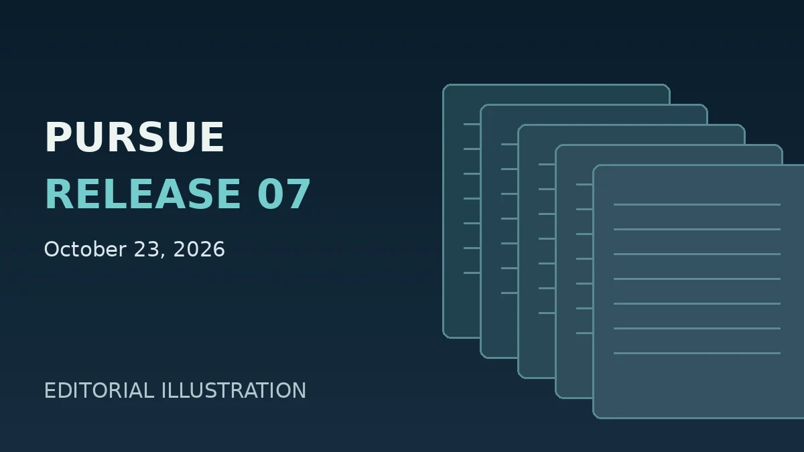

Government records · October 23, 2026
Pentagon Publishes Seventh PURSUE UAP Records Release

The Department of War announced its seventh release of unidentified anomalous phenomena records under the Presidential Unsealing and Reporting System for UAP Encounters (PURSUE) on October 23, 2026. The records are accessible through the government's PURSUE portal. Secondary cataloging reports 28 records and no separate videos in this tranche; GreyAlien has not independently audited the full document set.
What is confirmed
The official government announcement confirms that Release 07 was published and that further releases are planned. Publication establishes the availability and provenance of records, not independent validation of every claim described within them.
Items highlighted by secondary reporting
Reporting about the release identifies a contemporary federal-agent account of a dark triangular object, historical AAWSAP and Bigelow Aerospace Advanced Space Studies (BAASS) contractor materials, and a December 2008 Project Capella proposal for organizing anomalous-event data. These descriptions are research leads, not GreyAlien's independent document-level findings.
Project Capella is described as a proposed data-warehouse architecture for recording, classifying and retrieving unusual aerial reports. Its inclusion does not demonstrate that any proposed system was completed or that the reported phenomena had an extraordinary origin.
Evidence and review limitations
GreyAlien has not retrieved and checked all 28 underlying PDFs, independently verified the reported FBI/AARO witness descriptions, or authenticated any images described by other publications. No separate Release 07 case analysis or exhaustive document inventory is presented here. Such work is deferred to a future document-level ingestion.
Primary and supporting sources
Department of War official announcement · Official Release 07 portal · Leonard David's Project Capella overview · Permanent GreyAlien release record
Editorial status: Narrow announcement-level ingestion; document-level verification pending.